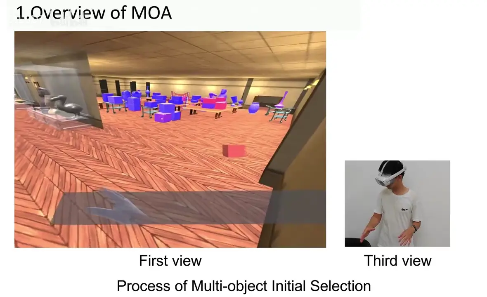

IEEE TVCG · 2026-02 · 已发表
MOA: Efficient Scene-Aware Multi-Object Arrangement in VR
王子腾：通讯作者（署名第三） / Corresponding author
IEEE Transactions on Visualization and Computer Graphics 32(2), pp. 2183-2199 · 10.1109/tvcg.2025.3636062
Abstract
3D multi-object arrangement is a fundamental task in VR that relies on accurate and natural initial selection alongside rapid and convenient subsequent manipulation to ensure high efficiency. However, existing methods fail to support efficient multi-object arrangement in highly occluded scenes with densely packed candidate objects through controller-free natural interactions. In this article, we propose an efficient, scene-aware multi-object arrangement method (MOA) designed for fast, precise, and convenient object arrangement. First, MOA introduces an importance-driven multi-object initial selection algorithm that assigns higher spatiotemporally correlated object importance (IMP) to target objects, establishing a natural multi-object initial selection mode that enables quick and accurate selection of high-IMP objects. Subsequently, it presents an auxiliary-structure-guided multi-object manipulation algorithm that constructs an auxiliary manipulation structure to assist subsequent multi-object manipulation, alongside a multi-modal interaction mode that facilitates swift and natural manipulation. Compared to state-of-the-art controller-free and controller-based methods, MOA significantly improves task performance, reduces task load, and enhances convenience in complex multi-object arrangement scenes involving hundreds of highly occluded objects need to be arranged.
THE IDEA
在大量物体互相遮挡的 VR 场景中，结合眼动、裸手和场景线索，先选中目标，再成组调整布局。
Scene-aware selection and auxiliary manipulation structures support controller-free arrangement of many occluded objects in VR.
整理一组家具或密集物体时，选对对象和移动对象同样重要。只优化某一次抓取，无法解决连续选择、遮挡和成组布局带来的操作负担。

借助场景线索确定重要性
以时空相关的 object importance（IMP）帮助区分目标和干扰对象，支持自然的多物体初始选择。
构建辅助操作结构
为已选物体构建辅助结构，让后续调整有可操作的参照，降低逐一处理物体的负担。
组合多模态交互
结合眼动与裸手等输入完成选择和操纵，使初始选取与后续布局成为连续流程。
实验告诉我们什么
| 评测 | 结果 / 观察 | 解释范围 |
|---|---|---|
| 场景 | 包含数百个、高度遮挡物体的复杂布局任务 | 关注多物体整理，不是孤立的单物体选择。 |
| 对比 | 与无手柄和有手柄方法比较 | 出版摘要报告任务表现、负担与便利性改善；本页不补造缺失的量化结果。 |
出版卷期：IEEE TVCG 32(2), 2183–2199, 2026；摘要来自 Semantic Scholar 对该 DOI 的记录，PubMed 记录 PMID 41284398 交叉核对书目信息。
演示 / Demo
MOA 作者演示：场景中的多物体选择与布局。
适用边界
当前说明依据出版摘要和作者材料。具体性能取决于场景组织、输入追踪质量和任务设计；没有完整终稿的评测表，不能据此承诺固定的效率提升。
我的贡献
负责方法提出、设计与实现，以及对比方法、用户实验和演示系统。通讯作者角色沿用个人简历记录。
引用这篇论文
Xuehuai Shi, Yuhan Duan, Ziteng Wang, Jian Wu, Zhiwen Shao, Jieming Yin, Lili Wang. MOA: Efficient Scene-Aware Multi-Object Arrangement in VR. IEEE Transactions on Visualization and Computer Graphics, 2026. DOI: 10.1109/tvcg.2025.3636062
@article{moa2026,
title = {{MOA: Efficient Scene-Aware Multi-Object Arrangement in VR}},
author = {Xuehuai Shi and Yuhan Duan and Ziteng Wang and Jian Wu and Zhiwen Shao and Jieming Yin and Lili Wang},
journal = {IEEE Transactions on Visualization and Computer Graphics},
year = {2026},
volume = {32},
number = {2},
pages = {2183--2199},
doi = {10.1109/tvcg.2025.3636062},
url = {https://doi.org/10.1109/tvcg.2025.3636062}
}